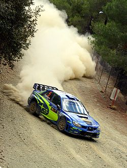

Назад
Ралли
 Ралли — вид автогонок, проходящих на открытых или закрытых трассах на модифицированных или специально построенных автомобилях. Этот вид гонок отличается тем, что заезды главным образом прокладываются по автомобильным дорогам общего пользования, в формате «из пункта A в пункт B» с прохождением контрольных точек. Пилоты едут на максимальной скорости только на специально перекрытых скоростных участках (их обычно называют СУ или ДОП). А от одного спецучастка до другого раллисты передвигаются, соблюдая все правила дорожного движения и за строго определенный временной норматив.
История возникновения ралли
Многие историки и спортсмены считают, что этот вид спорта возник в конце 19, начале XX века. Именно в это время проводилось первое официальное соревнование по ралли во Франции, в Париже.
 Свое название ралли получило от французского слова «слет», или объединение. В Монако в 1890 году действовал самый первый клуб автомобилистов. Именно им в то время пришла идея, что нужно объединяться всем вместе по интересам. Первый крупнейший сбор был в январе 1911 года. Он стал родоначальником ралли-гонок. Множество участников ехали по разным участкам трассы, а на заключительном этапе соревнования проходили вместе. Эти были первые крупные соревнования по ралли.
Свое название ралли получило от французского слова «слет», или объединение. В Монако в 1890 году действовал самый первый клуб автомобилистов. Именно им в то время пришла идея, что нужно объединяться всем вместе по интересам. Первый крупнейший сбор был в январе 1911 года. Он стал родоначальником ралли-гонок. Множество участников ехали по разным участкам трассы, а на заключительном этапе соревнования проходили вместе. Эти были первые крупные соревнования по ралли.